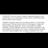

<html>
 <head>
  <title>
   Tweet quoting Noreen Gosch 2005 interview about elite pedophilia
  </title>
  <meta content="Post on /v/Pizzagate archived on 2017-04-17 by duhiki." name="description"/>
  <meta content="Tweet quoting Noreen Gosch 2005 interview about elite pedophilia" property="og:title"/>
  <meta content="Post on /v/Pizzagate archived on 2017-04-17 by duhiki." property="og:description"/>
  <link href="../../page.css" rel="stylesheet"/>
  <meta content="https://voat.pizzagate.hackliberty.org/thumbnails/74/f0/74f0b595-cf23-4417-9abe-ce8cc7ca6b00.jpg" property="og:image"/>
  <meta content="https://voat.pizzagate.hackliberty.org/1798623.html" property="og:url"/>
 </head>
</html>
<body class="dark">
 <div id="container">
  <!-- array (
  'submissionid' => 1798623,
  'creationDate' => '2017-04-17 06:13:58',
  'domain' => 'twitter.com',
  'formattedContent' => NULL,
  'isAdult' => 0,
  'isAnonymized' => 0,
  'subverse' => 'pizzagate',
  'thumbnail' => '74f0b595-cf23-4417-9abe-ce8cc7ca6b00.jpg',
  'title' => 'Tweet quoting Noreen Gosch 2005 interview about elite pedophilia',
  'url' => 'https://twitter.com/MandiReiSerra/status/853846896627941377',
  'userName' => 'duhiki',
  'archivedLink' => NULL,
  'archivedDomain' => NULL,
  'isDeleted' => 0,
) -->
  <div style="text-align:center; font-size:24px; font-weight:bold;">
   Voat /v/Pizzagate Archive
  </div>
  <div class="content" role="main">
   <div class="sitetable linklisting" id="siteTable">
    <div class="submission id-1798623 link type-text" id="submission-1798623">
     <a name="submissionTop">
     </a>
     <p class="parent">
     </p>
     <a class="thumbnail may-blank" href="https://twitter.com/MandiReiSerra/status/853846896627941377" target="_self">
      
     </a>
     <div class="entry unvoted">
      <p class="title">
       <a class="title may-blank" href="https://twitter.com/MandiReiSerra/status/853846896627941377" tabindex="1" target="_self" title="Tweet quoting Noreen Gosch 2005 interview about elite pedophilia">
        Tweet quoting Noreen Gosch 2005 interview about elite pedophilia
       </a>
       <span class="domain">
        (
        <a href="https://archive.searchvoat.co/search.php?d=twitter.com">
         twitter.com
        </a>
        )
       </span>
      </p>
      <p class="tagline">
       submitted
       <time datetime="2017-04-17T06:13:58+00:00" title="04/17/2017 6:13:58 AM">2017-04-17T06:13:58</time> by
       <span class="userattrs">
        <a class="author may-blank" href="https://archive.searchvoat.co/search.php?u=duhiki">
         duhiki
        </a>
       </span>
      </p>
      <ul class="flat-list buttons">
       <li class="first">
        <a class="comments may-blank" href="https://archive.searchvoat.co/v/pizzagate/1798623" rel="nofollow">
         2 comments
        </a>
       </li>
      </ul>
     </div>
     <div class="child">
     </div>
     <div class="clearleft">
     </div>
    </div>
    <div class="clearleft">
    </div>
   </div>
   <div class="horizontal-line">
   </div>
   <div class="commentarea">
    <div class="sitetable nestedlisting" id="siteTable">
     <div class="child id-8806621 comment even" style="">
      <div class="entry unvoted">
       <div class="noncollapsed" id="8806621" style=";">
        <p class="tagline">
         <a class="author may-blank" href="https://archive.searchvoat.co/search.php?u=PizzagateBot">
          PizzagateBot
         </a>
         <span class="userattrs">
         </span>
         <time datetime="2017-04-17T07:56:32+00:00" title="4/17/2017 7:56:32 AM">2017-04-17T07:56:32</time>
        </p>
        <div class="usertext-body may-blank-within" id="commentContent-8806621">
         <div class="md">
          <p>
           <p>
            Hi! I created the following archive link(s) for this voat submission:
           </p>
           <table>
            <thead>
             <tr>
              <th>
               OriginLink
              </th>
              <th>
               ArchiveOrg
              </th>
              <th>
               ArchiveIS
              </th>
              <th>
               WARCLinkSHA256
              </th>
             </tr>
            </thead>
            <tbody>
             <tr>
              <td>
               <a href="https://archive.searchvoat.co/v/pizzagate/1798623">
                https://voat.co/v/pizzagate/1798623
               </a>
              </td>
              <td>
               <a href="https://web.archive.org/web/20170417075627/https://voat.co/v/pizzagate/1798623">
                archive.org link
               </a>
              </td>
              <td>
               <a href="http://archive.is/Q1cwu">
                archive.is link
               </a>
              </td>
              <td>
               <a href="https://archive.org/download/1798623-20170417075625.warc.gz/1798623-20170417075625.warc.gz">
                6c9f2b7cfea5dec10c1047b0a801e67c474b87e605b51c0f6f515dae0e434f7b
               </a>
              </td>
             </tr>
             <tr>
              <td>
               <a href="https://twitter.com/MandiReiSerra/status/853846896627941377">
                https://twitter.com/MandiReiSerra/status/853846896627941377
               </a>
              </td>
              <td>
               <a href="https://web.archive.org/web/20170417075629/https://twitter.com/MandiReiSerra/status/853846896627941377">
                archive.org link
               </a>
              </td>
              <td>
               <a href="http://archive.is/sqw7P">
                archive.is link
               </a>
              </td>
              <td>
              </td>
             </tr>
            </tbody>
           </table>
           <p>
            WARC files are created with
            <a href="https://webrecorder.io/">
             https://webrecorder.io/
            </a>
            <br/>
            WARCs can be viewed offline with WARC replay tools like
            <a href="https://github.com/webrecorder/webrecorderplayer-electron">
             https://github.com/webrecorder/webrecorderplayer-electron
            </a>
            <br/>
            Final WARC will be created after 1 week from posting.
            <br/>
            Let me know if you would like to see a !RemindMe function.
           </p>
          </p>
         </div>
        </div>
        <ul class="flat-list buttons">
         <li class="first">
          <a class="bylink" href="https://archive.searchvoat.co/v/pizzagate/1798623/8806621" rel="nofollow">
           link
          </a>
         </li>
        </ul>
       </div>
      </div>
     </div>
     <div class="child id-8806234 comment even" style="">
      <div class="entry unvoted">
       <div class="noncollapsed" id="8806234" style=";">
        <p class="tagline">
         <a class="author may-blank" href="https://archive.searchvoat.co/search.php?u=derram">
          derram
         </a>
         <span class="userattrs">
         </span>
         <time datetime="2017-04-17T06:15:05+00:00" title="4/17/2017 6:15:05 AM">2017-04-17T06:15:05</time>
        </p>
        <div class="usertext-body may-blank-within" id="commentContent-8806234">
         <div class="md">
          <p>
           <p>
            <a href="https://tweetsave.com/mandireiserra/status/853846896627941377">
             https://tweetsave.com/mandireiserra/status/853846896627941377
            </a>
            :
           </p>
           <blockquote>
            <p>
             Mandi Rei - Author on Twitter: "From a 2005 interview. #Pedogate pops up again. But then again, it stems from Franklin Coverup.  #HumanTrafficking #WhyJohnnyCantComeHome  t.co/HMGVvgX437"
            </p>
           </blockquote>
           <p>
            <a href="https://vgy.me/hKcrJR.png">
             This has been an automated message.
            </a>
           </p>
          </p>
         </div>
        </div>
        <ul class="flat-list buttons">
         <li class="first">
          <a class="bylink" href="https://archive.searchvoat.co/v/pizzagate/1798623/8806234" rel="nofollow">
           link
          </a>
         </li>
        </ul>
       </div>
      </div>
     </div>
    </div>
   </div>
  </div>
 </div>
 <div class="footer-container">
 </div>
</body>
